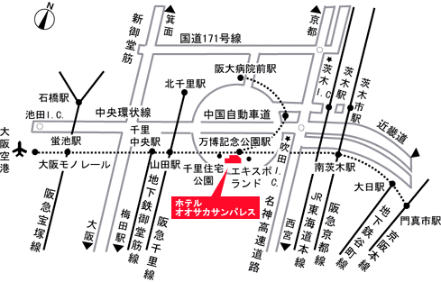

第11回光物性研究会・参加ご予定の皆様へ
宿泊予約のご案内
当研究会への予備登録などをして下さいまして、有り難うございました。
遠方より参加を予定しておられる皆様に、当研究会会場に利便性の良い
宿泊施設のご案内をさせて頂きます。
会場である、「大阪大学コンベンションセンター」がある大阪大学
吹田キャンパスから、「大阪モノレール」で2駅目の「万博記念公園駅」
の正面（徒歩5分）にホテル「オオサカ サンパレス」があります。
「宿泊申込書」(Acrobat PDF File)
で御申し込み頂きますと、割引料金で宿泊がご利用いただけます。
宿泊ご希望の方にはご利用をお薦めいたします。
- オオサカ サンパレス
- 〒565-0826 大阪府吹田市千里万博公園1-5
電話 ： 06-6878-3804, FAX ： 06-6878-3456

- 最寄駅 ：
- 大阪モノレール「万博記念公園駅」（駅から徒歩5分）
- アクセス
-
- 「大阪市営地下鉄御堂筋線・梅田駅」から「千里中央駅」へ、
「大阪モノレール」に乗り換えて「万博記念公園駅」（約40分）
- 「大阪市営地下鉄御堂筋線・新大阪駅駅」から「千里中央駅」へ、
「大阪モノレール」に乗り換えて「万博記念公園駅」（約35分）
- 「阪急京都線・河原町駅」から「南茨城駅」へ、
「大阪モノレール」に乗り換えて「万博記念公園駅」（約45分）
- 「JR東海道線・京都駅」から「茨城駅」へ、
「茨城駅」よりバス又はタクシーのご利用（約35分）
- 「大阪モノレール・大阪空港駅」から「万博記念公園駅」（約25分）
- URL:
- http://www.osaka-sunpalace.or.jp/
- 詳しい地図:
- Acrobat PDF 734KB
|
Modified: 23 Feb, 2021